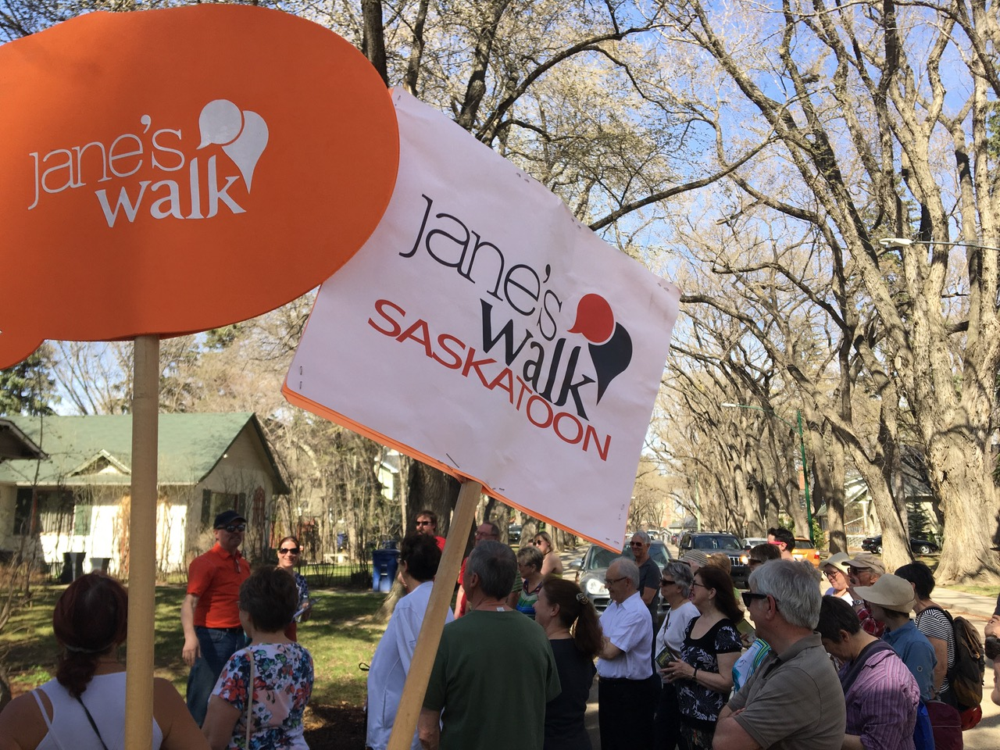

Jane's Walk is a series of free walking tours, held every year on the weekend closest to the
birthday of Jane
Jacobs.

May 2, 3, and 4, 2025
Land Acknowledgement
Jane's Walk Saskatoon is grateful to the Nêhiyawak (Cree) and Anihšināpēk (Saulteaux) Nations who signed Treaty
Six to share the beautiful lands of the Saskatoon Region as well as the communities of the Dakota, Lakota,
Nakoda, Dene and Métis Nations of this area. We commit to respect these rights-holders during our festival and
learn from their long ancestral traditions of land stewardship.